대칭에서 보존법칙으로: 노터 정리와 과학 계산의 설계 원리
작용의 연속 대칭이 운동량과 에너지로 이어지는 이유, 그리고 그 구조를 시뮬레이션·과학 AI·양자계산에 옮길 때의 조건
TECH REVIEW · 2026년 10월 17일 · 물리 원리와 계산 응용

내용 살펴보기
1. 예측이 그럴듯해도 물리적으로 틀릴 수 있다
분자 시뮬레이션에서 처음 몇 번의 진동은 잘 맞는데 시간이 지나면서 계의 총에너지가 계속 증가한다고 해 보자. 외부에서 일을 하지 않았고 열도 들어오지 않았다면, 실제 물리보다 계산 방법을 먼저 의심해야 한다. 원자 위치의 짧은 구간 예측이 정확하다는 것과 긴 시간 동안 에너지가 타당하게 변한다는 것은 다른 조건이다. 학습 데이터의 오차가 작은 AI 모델에서도 비슷한 문제가 생길 수 있다.
이때 대칭은 유용한 질문을 준다. 분자 전체를 조금 옮겼다는 이유로 내부 에너지가 달라져야 하는가? 같은 배치를 통째로 회전했을 때 에너지는 유지되고 힘의 방향은 함께 회전하는가? 외부 조건이 시간에 따라 바뀌지 않는 닫힌 모형에서 에너지가 계속 증가한다면 무엇이 잘못됐는가?
노터 정리는 이런 질문들을 하나의 수학적 관계로 연결한다. 적절한 작용의 연속 대칭은 운동방정식을 따르는 해에서 보존되는 양을 만든다. 이를 계산에 활용하려면 물리 모형, 학습 구조, 수치 알고리즘이 각각 어떤 대칭을 유지하는지 확인해야 한다. 하나가 다른 것까지 자동으로 보장하지는 않는다. [2–4]
출발점은 Shalma Wegsman의 Quanta Magazine 기사 「How Noether’s Theorem Revolutionized Physics」다. 2025년 2월 7일 발행된 이 기사는 일반상대론의 에너지 문제와 에미 노터의 1918년 연구를 연결해 설명한다. 공유된 LinkedIn 글은 같은 기사를 다시 소개한 것이다. 아래의 수학과 계산 응용은 원 기사에 관련 원전·연구를 더해 전개한다. [1]
2. ‘바꾸어도 같다’는 말의 정확한 대상
대칭은 언제나 무엇을 바꾸고 무엇을 같다고 보는지 정해야 한다. 원을 회전해도 모양이 같다는 기하학적 대칭과, 실험 전체를 옮겨도 같은 법칙이 적용된다는 물리적 대칭은 연결되어 있지만 대상이 다르다. 물리학에서는 개별 사진이나 순간 상태보다 운동을 정하는 법칙과 작용의 변환을 살핀다.
자유입자는 한 방향으로 움직이므로 그 궤적의 그림은 모든 회전에 대해 똑같지 않다. 그래도 자유입자의 법칙에는 특별히 선호되는 공간 방향이 없다. 법칙의 대칭과 특정 해의 대칭을 구분해야 한다. 반대로 지지대에 고정한 용수철에서 질점만 옮기면 늘어난 길이가 바뀐다. 그 질점의 운동만 기술한 모형에는 그 방향의 병진 대칭이 없다. 장치와 환경 중 무엇을 계에 포함했는지가 중요하다. [2,3]
노터 제1정리에서 핵심이 되는 것은 매끄럽게 조금씩 바꿀 수 있는 연속 대칭이다. 이동 거리, 회전각, 시간의 원점을 연속적으로 바꾸는 변환이 대표적이다. 삼각형의 120도 회전이나 좌우 반사 같은 이산 대칭에는 같은 무한소 생성자 논법을 그대로 적용할 수 없다. 시간의 원점을 옮기는 시간 병진과, 시간의 진행 방향을 뒤집는 시간반전도 다르다. [2,3]
| 변환과 성립 조건 | 대응하는 보존량 | 조건을 바꾸는 예 |
|---|---|---|
| 닫힌 계 전체의 연속 공간 병진 | 총 선운동량 | 고정된 외부 퍼텐셜과의 운동량 교환 |
| 닫힌 계 전체의 연속 공간 회전 | 총 각운동량 | 외부 토크 또는 고정된 방향을 갖는 장 |
| 작용의 시간 병진 | 해밀토니안에 해당하는 에너지 | 시간에 따라 바꾸는 외부 구동 |
| 물질장의 전역 위상 회전 | 해당 이론의 전하 | 어떤 위상 대칭인지와 상호작용을 확인해야 함 |
표의 ‘전체’는 핵심 조건이다. 두 입자가 상대 위치에만 의존하는 힘으로 상호작용하면 한 입자의 운동량은 계속 바뀌어도 둘의 총운동량은 일정할 수 있다. 작은 부분계의 관측량이 변했다는 것만으로 보존법칙이 실패한 것은 아니다.
3. 작용에서 보존량이 나오는 짧은 유도
입자의 위치나 회전각 같은 일반화 좌표를  , 그 시간 미분을
, 그 시간 미분을
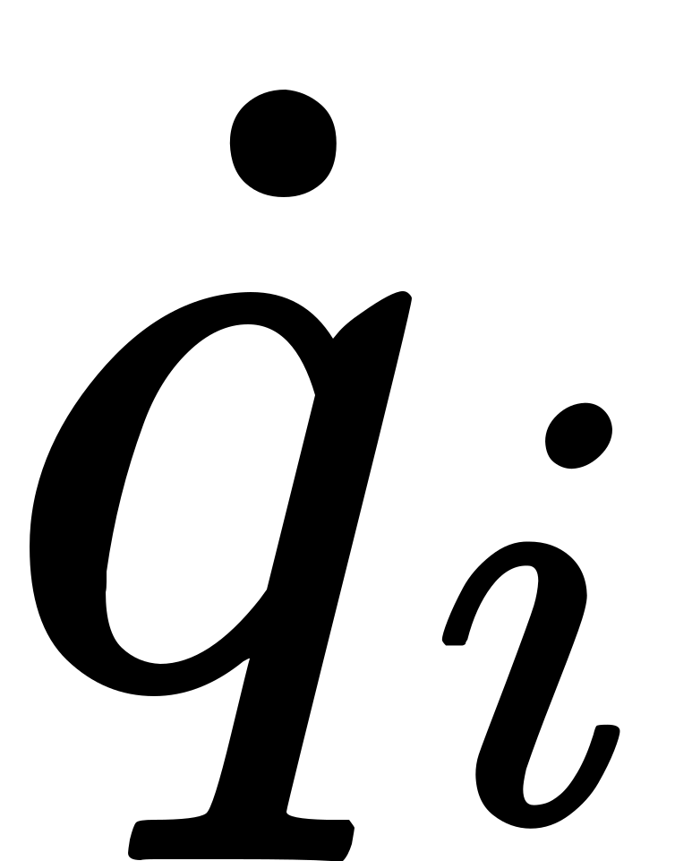
라 하자. 라그랑지안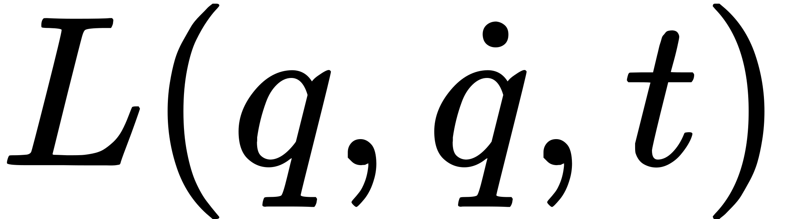
는 보통 운동에너지와 퍼텐셜에너지의 차이이며 에너지 단위를 갖는다. 작용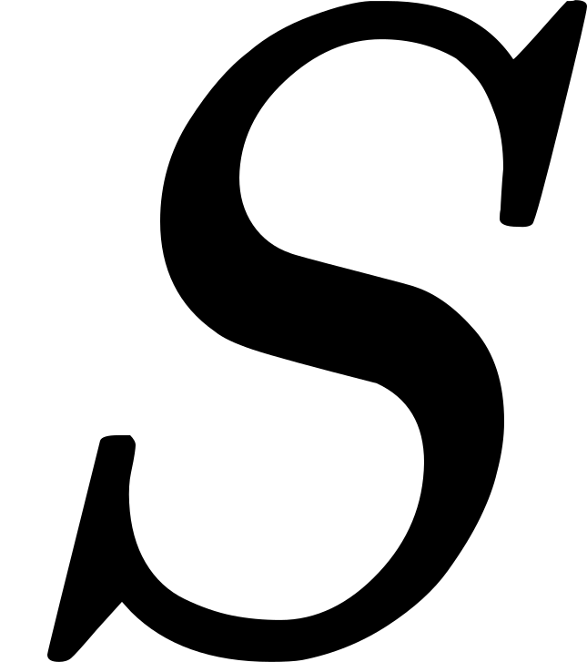
는 이를 시간에 대해 적분한 양으로, SI 단위는 J·s다.![S[q]=\int_{t_1}^{t_2}L(q,\dot q,t)\,dt.](math_7c7f6397d6a7c3.svg)
실제 운동은 허용된 작은 궤적 변형에 대해 작용이 정류하는 조건을 만족한다. ‘정류’는 일차 변화가 0이라는 뜻이며 언제나 최소라는 뜻은 아니다. 이 조건에서 오일러–라그랑주 방정식과 정준 운동량  를 얻는다. 좌표가 위치이면 운동량의 단위는 kg·m/s이고, 좌표가 각도이면 대응 운동량은 각운동량이다. [2,3]
를 얻는다. 좌표가 위치이면 운동량의 단위는 kg·m/s이고, 좌표가 각도이면 대응 운동량은 각운동량이다. [2,3]
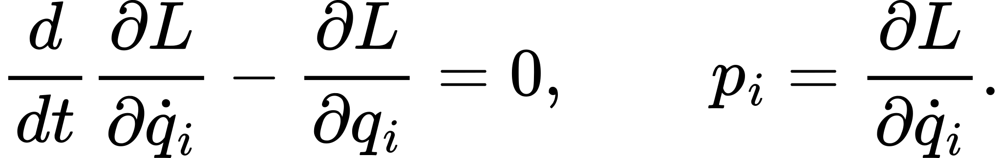
먼저 시간을 바꾸지 않고 를  만큼 바꾸자.
만큼 바꾸자.
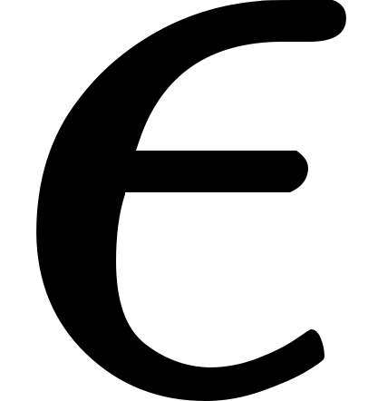
은 작은 변환 매개변수이며가 좌표와 같은 단위를 갖는다. 라그랑지안의 일차 변화가 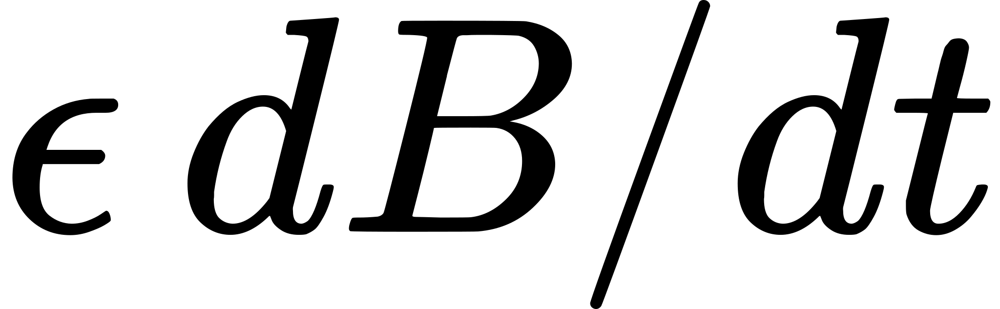
인 경우를 허용한다. 즉 작용이 끝점에서만 달라져도 된다. 운동방정식을 대입해 정리하면 다음을 얻는다.
따라서  의 시간 미분은 0이다. 이는 해를 따라 성립한다. 대칭 변환에서 작용의 변화가 경계에만 남는다는 조건과, 운동방정식에서 나타나는 전미분이 만나 보존량을 만든 것이다. 라그랑지안 자체가 한 글자도 변하지 않아야 한다는 요구보다 넓다. [2,3]
의 시간 미분은 0이다. 이는 해를 따라 성립한다. 대칭 변환에서 작용의 변화가 경계에만 남는다는 조건과, 운동방정식에서 나타나는 전미분이 만나 보존량을 만든 것이다. 라그랑지안 자체가 한 글자도 변하지 않아야 한다는 요구보다 넓다. [2,3]
시간까지 함께 바꾸면 식에 한 항이 더 들어간다.
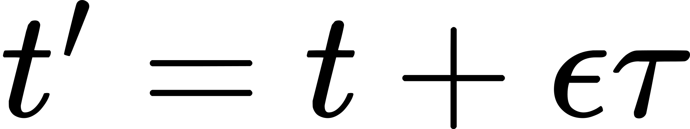
,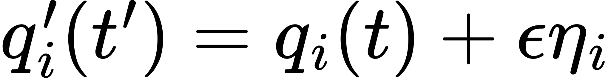
라고 정의하고, 변환한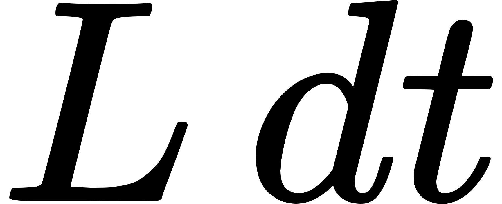
의 일차 변화가 라고 하자. 매개변수의 단위는 변환마다 선택하며,
라고 하자. 매개변수의 단위는 변환마다 선택하며, 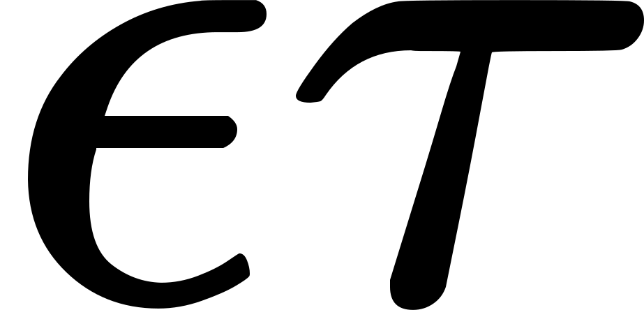
는 시간,는 좌표, 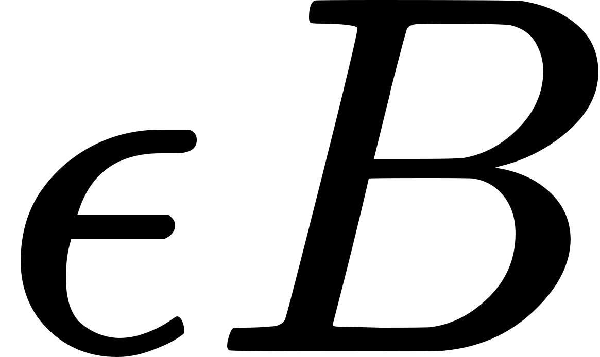
는 작용의 단위를 갖는다.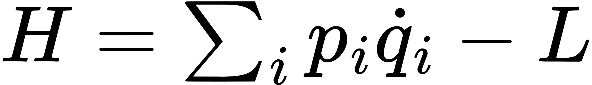
이면 보존량은 다음과 같다.
공간 병진에서는
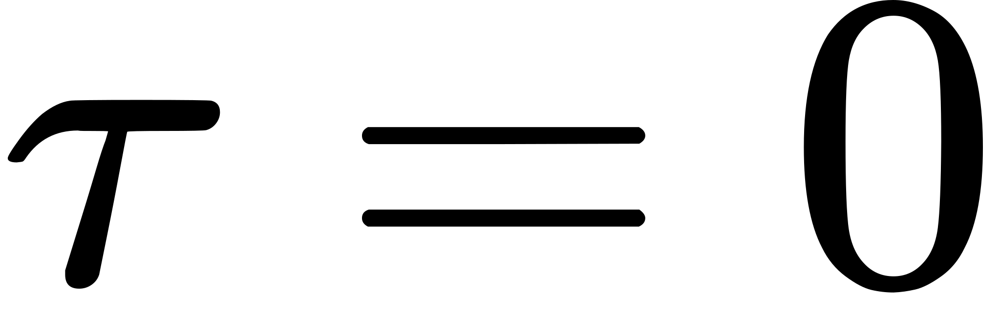
이고 일정한 방향의 운동량을 얻는다. 회전에서는
방향의 운동량을 얻는다. 회전에서는 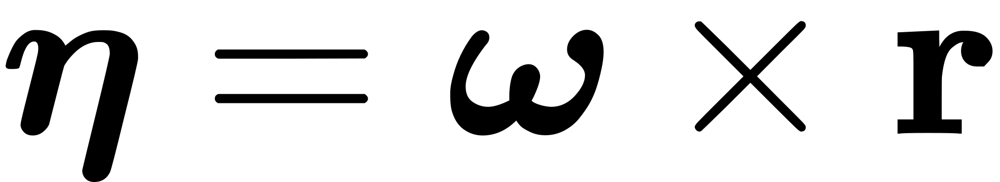
를 넣어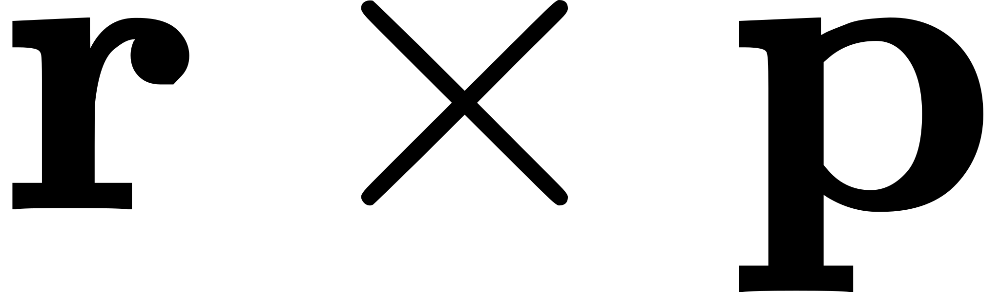
와 연결한다. 시간 병진을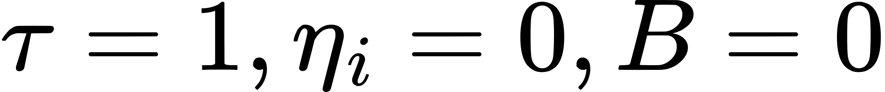
으로 잡으면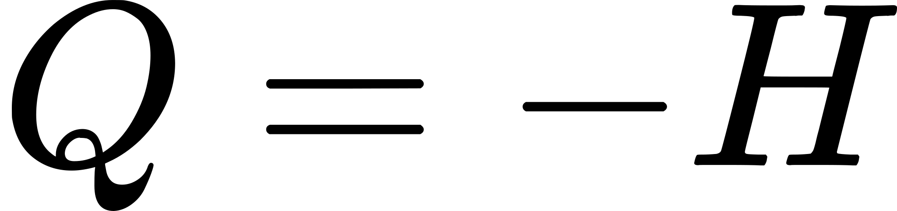
다. 전체 부호는 변환 방향의 관례이며, 보존되는 에너지는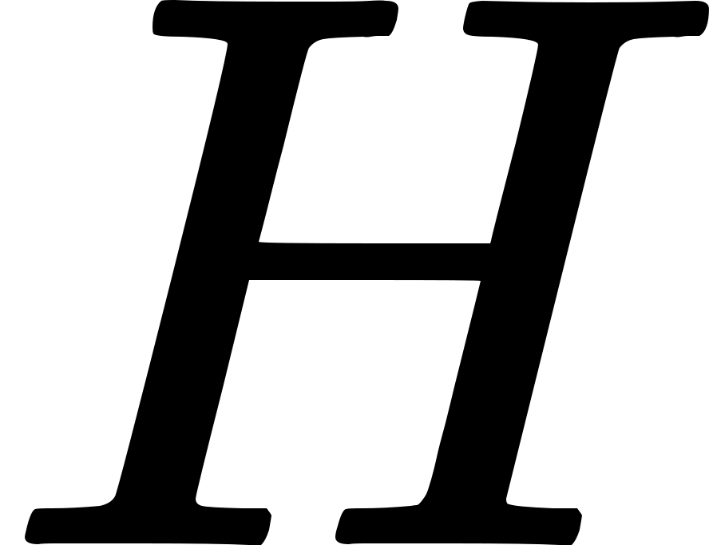
로 표현하면 된다. 일반적인 라그랑지안에서 가 일상적인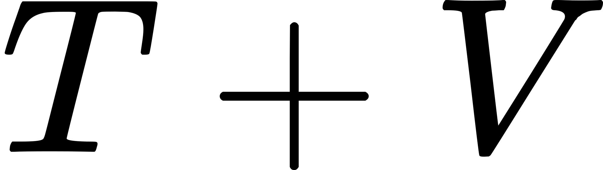
와 같은지는 별도로 확인한다. [3]구동되는 용수철은 조건의 의미를 잘 보여 준다.  에서는 강성
에서는 강성  가 외부에서 변한다. 운동방정식을 만족하는 운동에 대해 다음이 성립한다.
가 외부에서 변한다. 운동방정식을 만족하는 운동에 대해 다음이 성립한다.
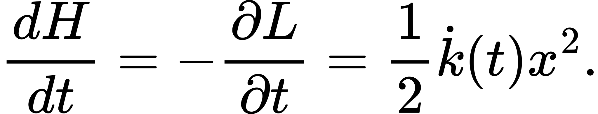
SI 단위로
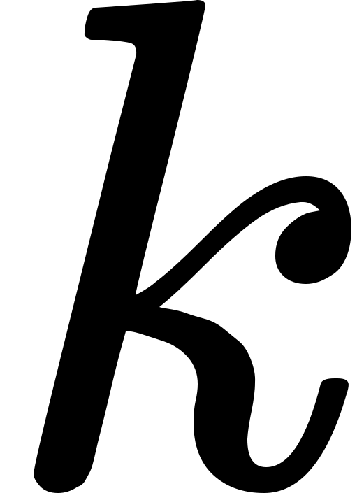
는 N/m이고 오른쪽은 일률 W다. 에너지 변화는 외부 구동과 일관된다. 강성을 조절하는 장치까지 포함하면 더 큰 계의 에너지 교환을 기술해야 한다. 이를 단순히 ‘에너지 보존 위반’이라고 부르면 계의 경계를 놓치게 된다.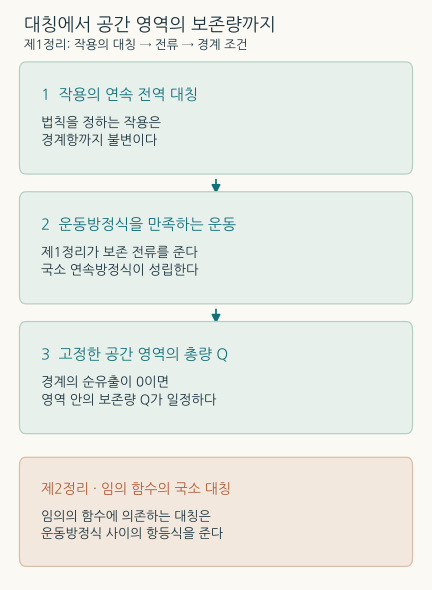
4. 노터의 두 정리는 무엇이 다른가
공간에 퍼진 전하나 유체를 다룰 때는 보존량을 밀도와 흐름으로 나눠 쓴다. 전하 밀도를  , 전류 밀도를
, 전류 밀도를
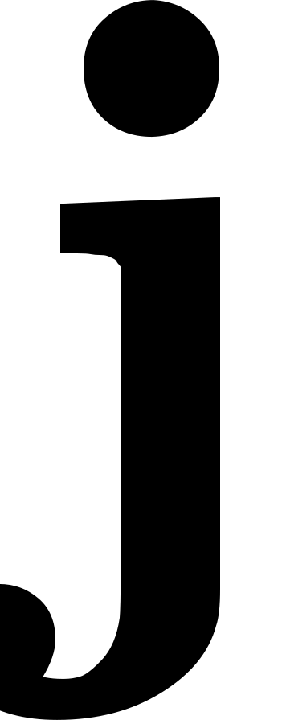
라 하면 국소 보존식과 유한 영역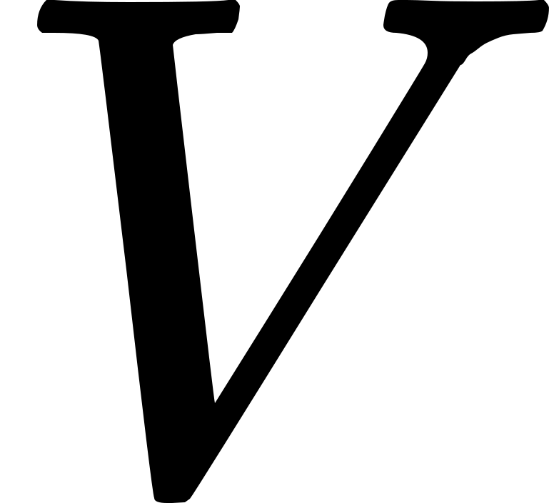
의 전하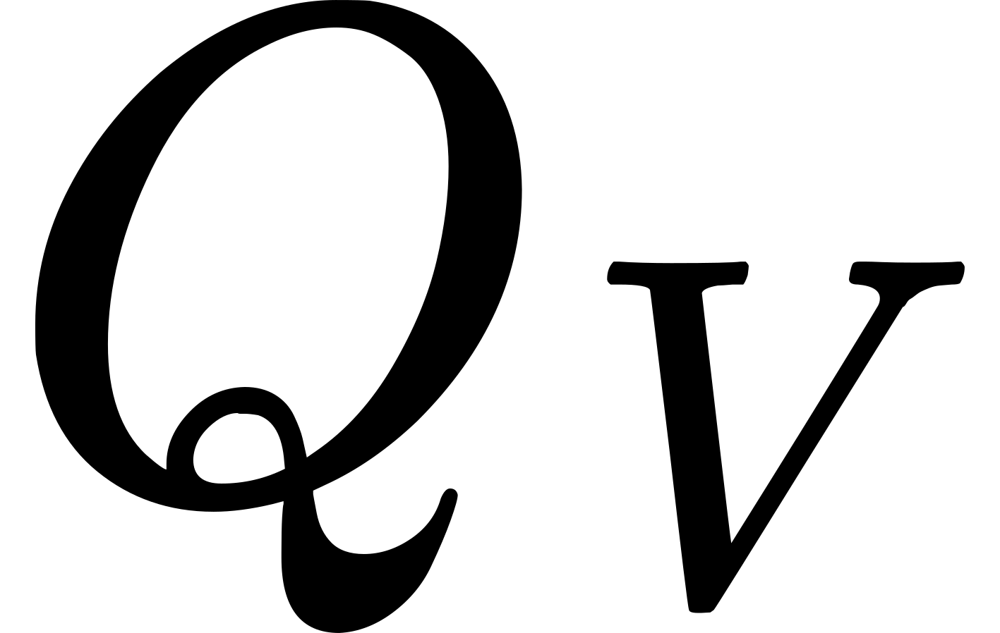
는 다음을 만족한다.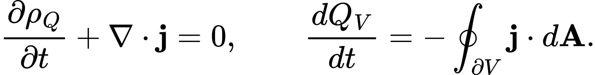
전하의 경우 는 C/m³, 는 A/m²이며 표면 적분은 A다. 지역 안의 전하가 줄어도 그만큼 밖으로 흘렀다면 보존식은 정확히 성립한다. 제1정리도 장 이론에서는 이런 국소 연속방정식을 준다. 전체 적분을 일정한 보존량으로 쓰려면 유출과 경계조건을 확인해야 한다. [4]
두 정리의 구별은 ‘전체 공간인가 작은 공간인가’에 있지 않다. 제1정리는 이동 거리나 회전각처럼 상수 매개변수로 기술하는 연속 대칭을 다룬다. 제2정리는 변환 매개변수를 시공간의 임의 함수로 허용하는 국소 대칭을 다루며, 운동방정식들 사이의 미분 항등식을 준다. 이 항등식은 운동방정식을 푼 뒤에만 성립하는 관계가 아니다. [2]
전자기 퍼텐셜의 게이지 변환과 일반상대론의 좌표 재기술이 그 배경이다. 같은 물리 상태를 여러 방식으로 표현할 수 있어 방정식 전체가 서로 독립적이지 않다. 전자기 전하를 설명할 때도 물질장의 전역 위상 대칭에서 얻는 전류, 국소 게이지 불변성이 주는 제약, 경계에 정의하는 전하를 구분해야 한다. 국소 게이지 자유도 하나하나를 새로운 독립 보존량으로 세지는 않는다. [2,4,5]
5. 팽창하는 우주의 빛은 왜 에너지를 잃는가
원 기사의 가장 흥미로운 대목은 일반상대론과 에너지다. 여기서는 ‘에너지 보존이 깨진다’는 표현의 범위를 정밀하게 잡을 필요가 있다. 일반상대론에서도 물질의 에너지–운동량 텐서  는 운동방정식과 함께 공변 보존식
는 운동방정식과 함께 공변 보존식  을 만족한다. 휘어진 시공간에서의 이 관계를, 우주 전체에 걸쳐 에너지를 단순 합산한 값이 일정하다는 주장과 동일시할 수는 없다. [6]
을 만족한다. 휘어진 시공간에서의 이 관계를, 우주 전체에 걸쳐 에너지를 단순 합산한 값이 일정하다는 주장과 동일시할 수는 없다. [6]
전역적으로 보존되는 에너지를 표준적인 방식으로 만들려면 적절한 시간 대칭과 경계조건이 필요하다. 시간 방향 킬링 벡터는 시공간의 기하가 그 방향으로 변하지 않는다는 뜻이다. 일반적인 팽창 우주에서는 이런 전역 시간 병진 대칭을 기대할 수 없다. 한편 고립계의 점근적 조건이나 다른 기하학적 조건을 이용한 에너지 정의도 있으므로, ‘곡률이 있으면 어떤 에너지도 정의할 수 없다’는 결론 역시 과하다. [6]
균질·등방 우주의 국소 보존식을 보면 광자의 적색편이와의 관계가 선명해진다. 빛의 속도를 1로 놓은 단위계에서 에너지 밀도를  , 압력을
, 압력을  , 우주의 척도인자를
, 우주의 척도인자를
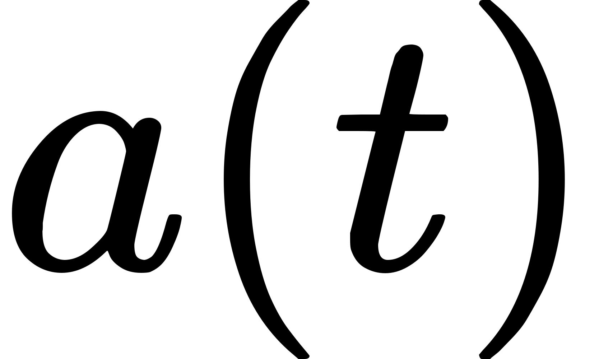
라 쓰면 다음이 성립한다.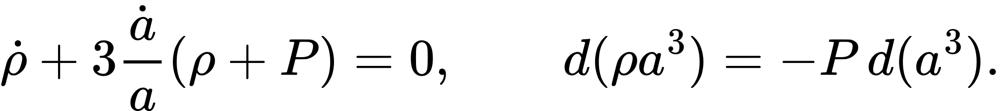
여기서
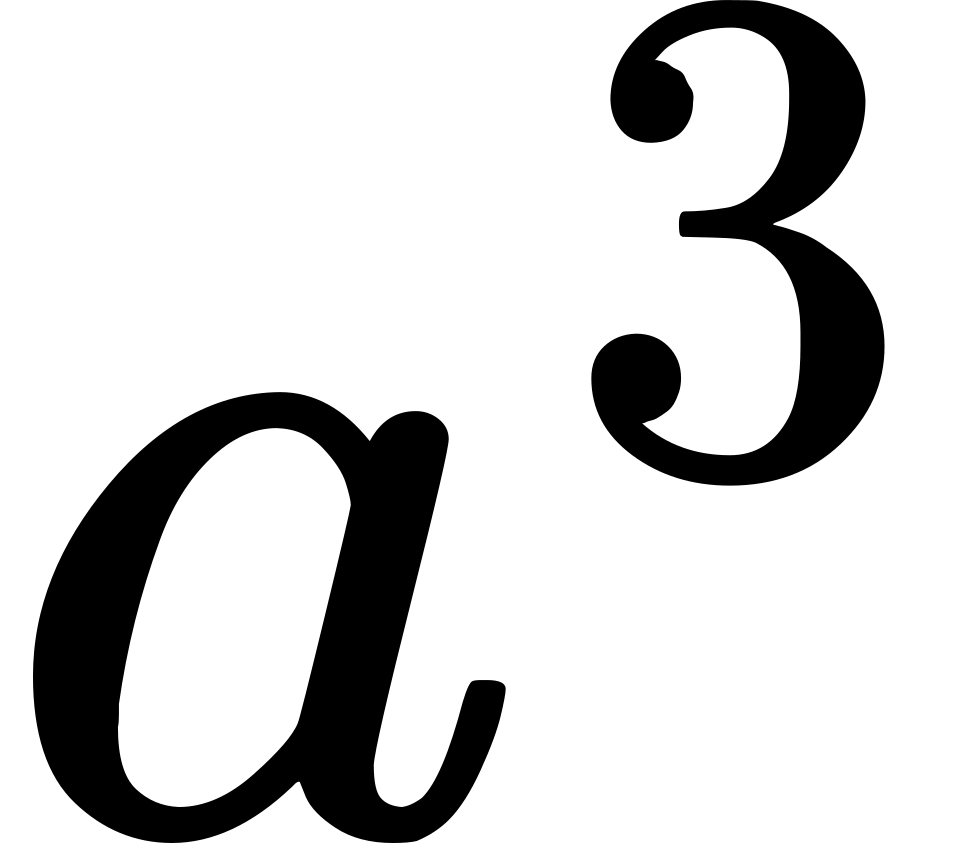
는 고정된 공변 부피에 대응하는 물리 부피에 비례한다. 복사는 이므로 에너지 밀도가
이므로 에너지 밀도가 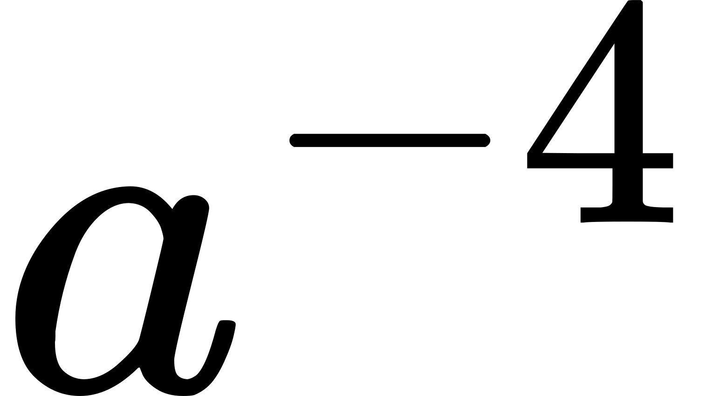
에 비례한다. 부피 증가에 따른 희석 외에 광자 하나의 에너지도 에 비례해 감소한다. 이 현상은 국소 공변 보존식과 양립하며 가속 팽창을 전제로 하지도 않는다. 원 기사의 직관을 받아들이되, 이를 실험실의 닫힌 계에서 임의로 에너지를 만들 수 있다는 주장으로 옮겨서는 안 된다. [6]
에 비례해 감소한다. 이 현상은 국소 공변 보존식과 양립하며 가속 팽창을 전제로 하지도 않는다. 원 기사의 직관을 받아들이되, 이를 실험실의 닫힌 계에서 임의로 에너지를 만들 수 있다는 주장으로 옮겨서는 안 된다. [6]
6. 수치 시뮬레이션에서는 대칭을 어떻게 남길까
연속시간의 방정식에 보존법칙이 있어도 컴퓨터는 유한한 시간 간격으로 계산한다. 이산화 과정이 원래 구조를 잃으면 작은 오차가 쌓여 가짜 가열이나 비물리적인 운동량 변화를 만들 수 있다.
변분 적분기는 운동방정식을 직접 근사하는 대신 작용을 이산화하고 거기서 갱신식을 유도한다. 이산 라그랑지안이 해당 대칭을 유지하면 이산 노터 정리에 따라 대응 운동량을 보존한다. 적절한 조건에서 심플렉틱 구조도 유지한다. 심플렉틱 구조는 위치와 운동량이 이루는 위상공간의 기하로, 장시간 운동을 계산할 때 중요한 제약이다. Marsden과 West의 정리와 해설은 분자동역학의 Verlet 같은 방법을 이 관점에서 연결한다. [7]
다만 심플렉틱이라는 이름이 원래 물리적 에너지의 매 단계 정확한 보존을 뜻하지는 않는다. 고정 시간 간격의 일반적인 방법에서는 에너지가 작게 진동할 수 있고, 일정한 정칙성·안정성 조건에서 그 오차가 장시간 잘 제어된다. 보존하는 운동량, 보존하는 기하, 에너지의 오차 거동을 따로 적어야 한다. [7]
이를 보기 위해 리뷰에서 조화진동자를 직접 계산했다. 질량과 각진동수를 각각 1로 정규화하고, 초기 위치 1·운동량 0, 시간 간격 0.1, 총 2,000단계를 사용했다. 시간은 고유 각진동수의 역수 단위로 표시한다. 정확한 해의 에너지는
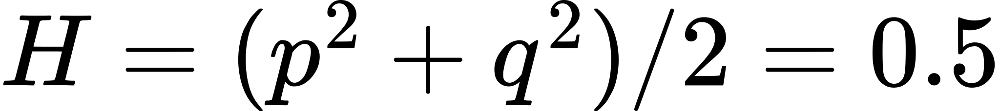
로 일정하다.
전진 오일러의 마지막 에너지는 처음의 약 4.39억 배다. 이 사례에서는 단계마다 에너지가 정확히
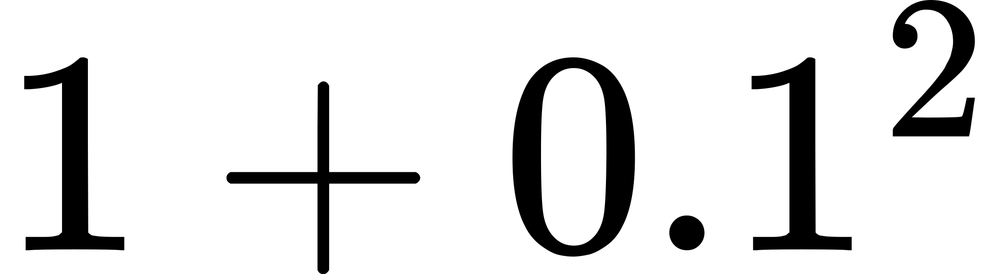
배가 되므로 수치값을 해석적으로도 확인할 수 있다. 심플렉틱 오일러의 최대 상대 에너지 오차는 약 5.26%, velocity Verlet은 약 0.25%다. 후자의 오차도 0은 아니다. 이 결과는 선택한 진동자와 시간 간격의 성질이며 모든 심플렉틱 방법이 모든 다른 방법보다 정확하다는 주장을 뒷받침하지 않는다.더 복잡한 예로 Xiao 등의 Vlasov–Maxwell particle-in-cell 연구는 입자와 전자기장의 이산 라그랑지안, 게이지 불변성, 비정준 심플렉틱 구조를 함께 설계한다. 연구진은 전하 보존을 유지하는 알고리즘을 구성하고 비선형 Landau 감쇠와 전자 Bernstein 파동으로 검증했다. 이는 플라스마 장시간 계산의 구체적 방법론이며, 해당 결과만으로 핵융합 장치의 제어 성능까지 판단할 수는 없다. [8]
7. 과학 AI는 보존법칙을 학습할까, 구조로 가질까
일반 신경망으로 위치와 속도의 다음 값을 예측하면, 데이터에 보존 운동이 많더라도 보존법칙이 정확하게 내장되지는 않는다. Hamiltonian Neural Network(HNN)는 스칼라 함수
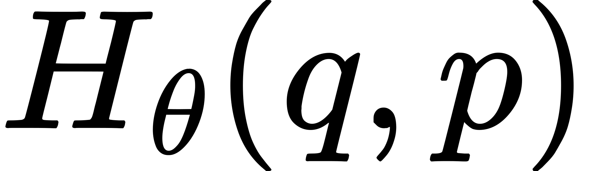
를 학습하고 미분을 통해 운동을 만든다. 는 신경망 매개변수이고
는 신경망 매개변수이고 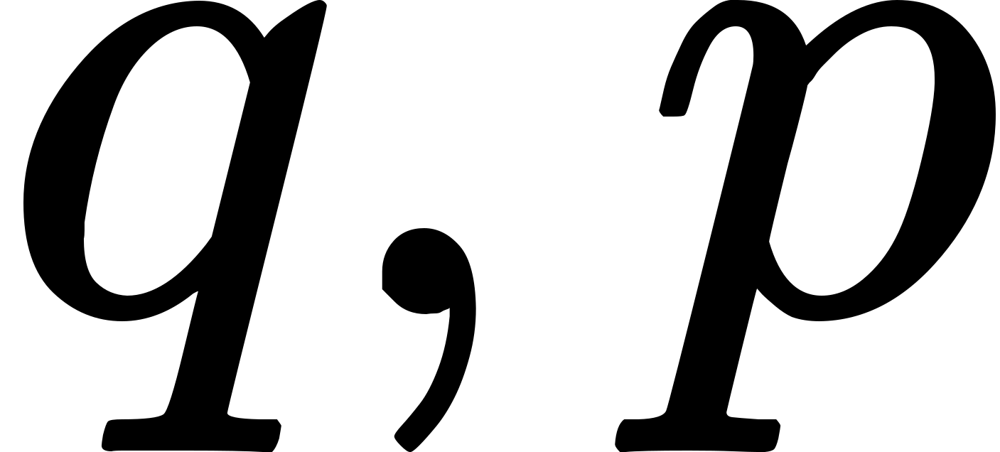
는 정준 좌표와 운동량이다. [9]
시간에 명시적으로 의존하지 않는 매끄러운  라면 연속시간에서 두 항이 상쇄되어
라면 연속시간에서 두 항이 상쇄되어
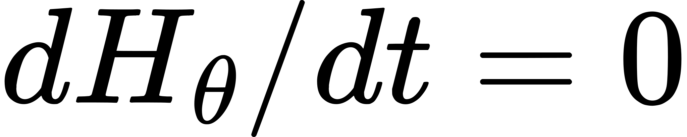
이다. 여기서 보존되는 것은 학습된 함수다. 실제 에너지를 정확히 학습했는지, 위치와 운동량의 정준 구조가 맞는지, 계산 중 적분 오차가 얼마나 생기는지는 남는 문제다. 원 연구는 스프링·진자·이체 운동과 영상 기반 예시를 사용했으며, 마찰을 다루려면 추가 모델링이 필요하다고 명시한다. [9]Lagrangian Neural Network(LNN)는 좌표와 속도에서  를 학습한 뒤 오일러–라그랑주 방정식으로 운동을 구한다. 정준 운동량을 직접 알기 어려울 때 장점이 있다. 그러나 가속도를 풀기 위한 속도에 대한 Hessian의 비특이성, 시간 의존성, 제약·소산 처리가 중요하다. 원 논문은 이중 진자, 상대론적 입자, 1차원 파동방정식 등을 제시한 2020년 워크숍 연구다. 이 예시만으로 산업용 디지털 트윈의 신뢰성을 보장할 수는 없다. [10]
를 학습한 뒤 오일러–라그랑주 방정식으로 운동을 구한다. 정준 운동량을 직접 알기 어려울 때 장점이 있다. 그러나 가속도를 풀기 위한 속도에 대한 Hessian의 비특이성, 시간 의존성, 제약·소산 처리가 중요하다. 원 논문은 이중 진자, 상대론적 입자, 1차원 파동방정식 등을 제시한 2020년 워크숍 연구다. 이 예시만으로 산업용 디지털 트윈의 신뢰성을 보장할 수는 없다. [10]
이 접근의 실용적 가치는 학습기에게 ‘어떤 함수든 맞혀 보라’고 하기보다 물리에 맞는 함수와 운동의 관계를 제한하는 데 있다. 반면 열이 빠져나가는 장치, 마찰·화학반응·외부 구동이 있는 계에 보존계를 강제하면 틀린 가정이 된다. 그런 경우에는 일과 열의 전달, 소산, 제어 입력을 모형에 포함해 관측되는 에너지 변화를 설명해야 한다.
8. 등변 신경망과 원자간 퍼텐셜의 연결
분자 전체를 회전해도 에너지는 같아야 한다. 힘 벡터는 회전에 맞춰 돌아가야 한다. 앞은 불변성, 뒤는 등변성이다. 회전 행렬
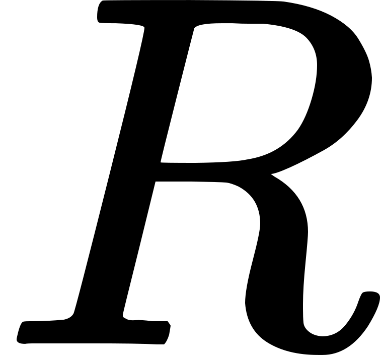
에 대해 스칼라 예측은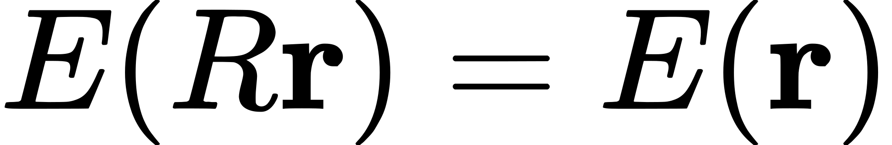
, 힘은 를 만족하는 것이 목표다. 외부 방향을 가진 장이나 기판이 있다면 그 환경도 함께 변환하거나 대칭 조건을 조정해야 한다.
를 만족하는 것이 목표다. 외부 방향을 가진 장이나 기판이 있다면 그 환경도 함께 변환하거나 대칭 조건을 조정해야 한다.
NequIP은 이런 공간 대칭에 맞는 표현을 사용하는 원자간 퍼텐셜 모델이다. 연구진은 물, 비정질 물질, 계면과 이온 전도체 등의 계에서 데이터 효율과 예측 성능을 평가했다. 중요한 것은 힘을 벡터로 잘 변환하는 구조와 보존적 힘을 얻는 구조를 함께 보는 것이다. NequIP은 예측한 총 퍼텐셜에너지에서 다음과 같이 힘을 계산한다. [11]
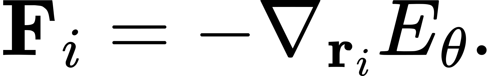
미분 가능한 에너지의 음의 기울기를 쓰면 보존적 힘장을 구성할 수 있다. 고립계에서 그 에너지가 공통 병진과 회전에 불변이면, 순힘과 순토크가 0이라는 제약도 따른다. 등변 벡터를 출력한다는 사실만으로 어떤 벡터장이나 보존적이 되는 것은 아니다. 실제 분자동역학의 총에너지 거동은 시간 간격과 적분기, 온도조절기에도 달려 있다. [11]
OLED·분자재료 연구로 연결한다면, 먼저 전자 바닥상태 퍼텐셜에서의 구조·열적 운동을 평가하는 과제가 자연스럽다. 여기상태, 전하이동, 스핀–궤도 결합, 비단열 전이, 발광 수명은 추가 물리와 검증이 필요하다. 이 연결은 리뷰의 적용 제안이며 NequIP 원 논문이 OLED 소자의 효율이나 수명을 검증했다는 뜻은 아니다.
9. 양자계산에서는 대칭이 오류를 가려낸다
양자계에서도 해밀토니안과 교환하는, 명시적 시간 의존성이 없는 관측량은 닫힌 계의 시간 진화에서 보존된다. 이를 이용하면 계산이 유지해야 할 입자수나 대칭 부분공간을 정하고 결과를 검사할 수 있다. 보존량을 활용해 허용된 부분공간을 좁히는 것과 계산 전체가 더 빨라지는 것은 별도로 평가한다. [4,12]
Sagastizabal 등의 2019년 연구는 초전도 회로 QED 프로세서의 두 큐비트로 수소 분자의 바닥상태를 추정하면서 패리티 대칭을 검증했다. 이상적인 계산이 머물러야 할 대칭 부분공간 밖으로 나간 성분을 배제해, 큐비트 이완과 잔여 여기로 생기는 오차를 줄였다. 이는 실제 소규모 양자 장치의 실험이다. [12]
개념적으로 목표 부분공간의 사영 연산자를  , 잡음이 포함된 상태를 라 하면 조건부 상태는 다음과 같다.
, 잡음이 포함된 상태를 라 하면 조건부 상태는 다음과 같다.

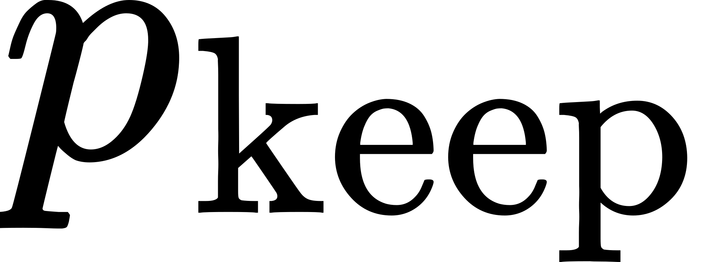
는 유지되는 비율이다. 이상적으로 독립 표본을 선별한다면 같은 수의 유지 표본을 얻는 데 약 배의 시도가 필요하다. 실제 비용은 측정 방식과 추정량의 분산에도 좌우된다. 목표 부분공간 안에 남는 오류는 이 검사만으로 찾지 못한다. [12]
배의 시도가 필요하다. 실제 비용은 측정 방식과 추정량의 분산에도 좌우된다. 목표 부분공간 안에 남는 오류는 이 검사만으로 찾지 못한다. [12]
여기서 패리티는 이산 대칭이다. 따라서 이 사례를 연속 대칭에 관한 노터 제1정리의 직접 적용으로 부르면 부정확하다. 대칭을 모델과 알고리즘의 제약으로 쓰고, 그 제약을 결과 검증에도 활용한다는 넓은 연결로 이해하는 것이 적절하다. 오류정정의 완전한 대체나 양자 우위의 증명도 아니다.
10. 대칭이 ‘깨진다’는 세 가지 다른 상황
첫째는 명시적 깨짐이다. 라그랑지안에 특정 방향의 외부장이나 시간 의존 구동을 넣어 해당 대칭을 없앤다. 보존량 변화에는 그 항이 주는 힘·토크·일률이 나타난다. 앞서 강성을 바꾼 용수철이 예다.
둘째는 자발적 깨짐이다. 작용과 법칙에는 정확한 대칭이 남아 있지만 선택된 바닥상태가 그 대칭을 공유하지 않는다. 이는 그 자체로 노터 전류의 비보존을 뜻하지 않는다. 원점에서 모든 방향이 동등한 퍼텐셜을 생각해도 특정한 상태는 한 방향을 선택할 수 있다. 법칙과 상태의 구별이 다시 중요해진다. [13]
셋째는 양자 이상(anomaly)이다. 고전 작용의 대칭이 양자화한 이론의 적분측도와 정칙화까지 유지되지 않을 수 있다. Fujikawa의 원 연구는 경로적분 측도의 변환으로 축 이상을 설명한다. 축 전류의 이상을 전자기 전하가 임의로 보존되지 않는다는 주장과 혼동해서는 안 된다. 동역학적 게이지 이론의 일관성을 위해 필요한 이상 상쇄 문제도 별도로 존재한다. [14]
이 구별은 기술 검증에도 쓸모가 있다. 계산에서 기대한 보존량이 변했다면 원인이 외부 구동인지, 부분계의 유출인지, 근사 모형인지, 이산화인지부터 따져야 한다. 수치 오차를 곧바로 새로운 물리나 양자 이상으로 해석할 근거는 없다.
11. 연구와 개발에서 실제로 확인할 것
| 적용하려는 문제 | 유용한 설계 선택 | 결과를 판단할 관측량 |
|---|---|---|
| 분자동역학·기계계의 장시간 적분 | 계의 대칭에 맞는 변분·심플렉틱 적분기 | 에너지 오차의 시간 변화, 총운동량, 위상 오차 |
| 데이터로 동역학 학습 | HNN·LNN과 적합한 외력·소산 항 | 미관측 궤적, 실제 에너지, 여러 시간 간격에서의 오차 |
| 원자간 퍼텐셜 학습 | 에너지 불변성, 힘의 등변성, 에너지 미분 | 회전·병진 검사, 힘 오차, 닫힌 궤적의 일, NVE 안정성 |
| 입자·전자기장 계산 | 이산 게이지 구조와 전하 연속식 유지 | 전하 잔차, 장 제약, 장시간 물리량 |
| 양자 상태·에너지 추정 | 대칭 부분공간과 검증 측정 | 에너지 편향, 유지 비율, 총 측정 횟수, 검출 불가 오류 |
이 표는 연구 결과를 적용할 때의 검토 제안이다. 예를 들어 원자간 모델에서는 원자 전체를 옮기거나 돌린 뒤 에너지와 힘의 변화를 비교할 수 있다. 외력이 없는 고립계라면 총힘과 총토크도 검사한다. 에너지가 없는 힘 전용 모델이라면 폐곡선을 따라 한 일이 0인지가 보존성을 점검하는 한 방법이다. NVE는 입자수·부피·에너지를 고정한 고립계 조건을 뜻하며, 안정적인 궤적만으로 퍼텐셜이 정확하다고 판정할 수는 없다.
학습 오차가 작더라도 힘을 적분했을 때 운동이 어긋날 수 있고, 보존량을 정확히 유지하더라도 잘못된 퍼텐셜 위를 정확하게 움직일 수 있다. 따라서 데이터 적합도, 물리 대칭, 보존 관계, 수치 적분, 실험 관측량을 연결해서 판단해야 한다. 이 중 하나만으로 나머지를 대체할 수 없다.
노터 정리가 과학 계산에 주는 힘은 해를 하나 더 계산하는 데 있지 않다. 허용되는 모델과 운동을 제한하고, 계산이 어디서 물리 구조를 잃었는지 묻는 기준을 준다. 그 기준은 고전역학과 장 이론에서 시작해 수치해석과 과학 AI로 이어진다. 실제 응용에서는 항상 계의 경계와 외부 구동, 근사와 알고리즘을 함께 명시해야 한다.
참고문헌과 원문
- Wegsman, S. How Noether’s Theorem Revolutionized Physics. Quanta Magazine, 2025-02-07. 기사. 역사와 문제의식의 출발점.
- Noether, E. Invariante Variationsprobleme (1918), 235–257. M. A. Tavel 영문 번역, Transport Theory and Statistical Physics 1(3), 186–207 (1971). DOI · 영문 원문, arXiv:physics/0503066v3, 2018-05-30. 제1·2정리는 §1–2.
- Harvey Mudd College Physics 111 자료. Symmetries and Conservation Laws, Chapter 6, §6.4–6.5. 원문 PDF. Saeta 교수의 강의 웹사이트에서 제공하는 교재 장으로, PDF에 명시되지 않은 저자는 지정하지 않았다. 시간 변환·경계항을 포함한 역학 설명.
- Tong, D. Quantum Field Theory, §1.3, Symmetries and Noether’s theorem. 공식 강의 노트. 전류·전하·경계조건과 양자 이론의 배경.
- Avery, S. G.; Schwab, B. U. W. Noether’s Second Theorem and Ward Identities for Gauge Symmetries. Journal of High Energy Physics 2016, 31. arXiv:1510.07038 · DOI. 국소 대칭과 항등식, 경계의 역할.
- Tong, D. General Relativity, Chapter 4, 특히 §4.3 및 §4.5–4.6. 공식 강의 노트. 공변 보존, Killing 대칭, 에너지와 우주론.
- Marsden, J. E.; West, M. Discrete mechanics and variational integrators. Acta Numerica 10, 357–514 (2001). DOI · 저자 해설. 이산 작용, 운동량과 심플렉틱 구조.
- Xiao, J. et al. Explicit high-order non-canonical symplectic particle-in-cell algorithms for Vlasov-Maxwell systems. Physics of Plasmas 22, 112504 (2015). DOI · arXiv:1510.06972v2, 2016-03-12. 플라스마 수치계산 사례.
- Greydanus, S.; Dzamba, M.; Yosinski, J. Hamiltonian Neural Networks. NeurIPS 2019. 원문 · 학회. §2의 구조와 §3.2의 보존량 해석.
- Cranmer, M. et al. Lagrangian Neural Networks. ICLR 2020 Deep Differential Equations Workshop. arXiv:2003.04630v2, 2020-07-30 · 저자 코드. 학회 본회의 논문과 구분하는 워크숍 연구.
- Batzner, S. et al. E(3)-equivariant graph neural networks for data-efficient and accurate interatomic potentials. Nature Communications 13, 2453 (2022). DOI · 공개 원고. Methods의 에너지·힘 구성.
- Sagastizabal, R. et al. Experimental error mitigation via symmetry verification in a variational quantum eigensolver. Physical Review A 100, 010302(R) (2019). DOI · 공개 원고. 공개 원고의 제목은 Error Mitigation by Symmetry Verification on a Variational Quantum Eigensolver.
- Kaplunovsky, V. Spontaneous Symmetry Breaking, University of Texas 강의자료 (2020). 원문 PDF. 법칙·바닥상태의 대칭과 보존 전류.
- Fujikawa, K. Path-Integral Measure for Gauge-Invariant Fermion Theories. Physical Review Letters 42, 1195–1198 (1979). DOI·원문. 축 이상과 적분측도. Tong, Gauge Theory §3.2–3.4는 이상과 상쇄의 보충 설명.